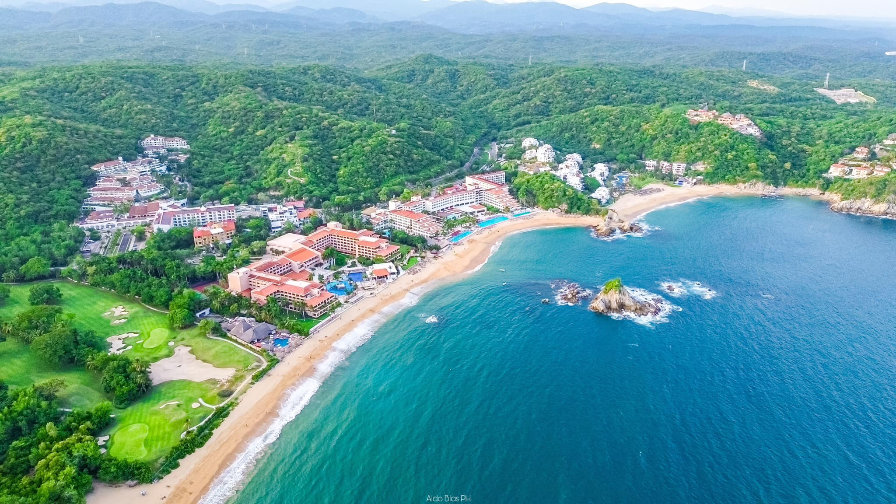
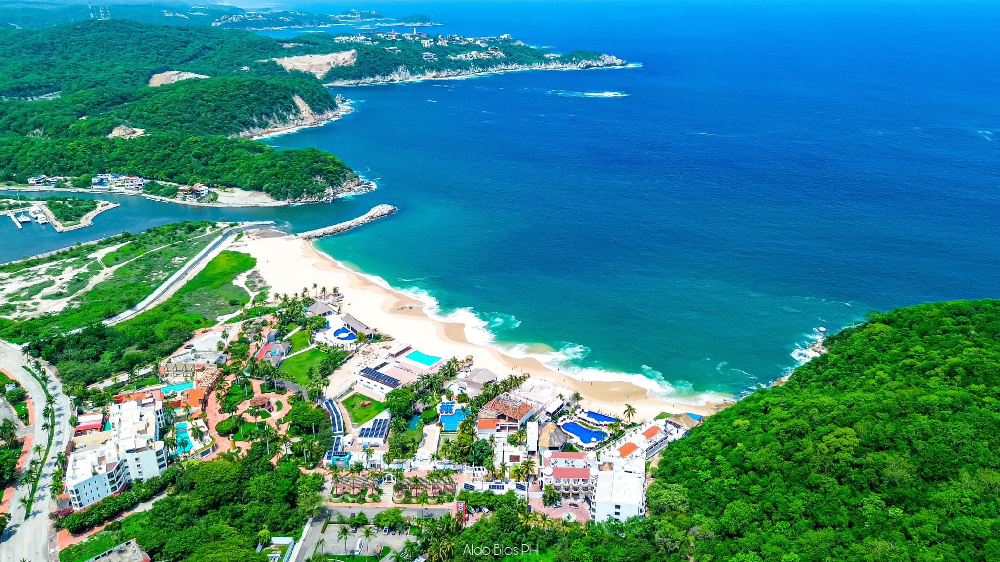
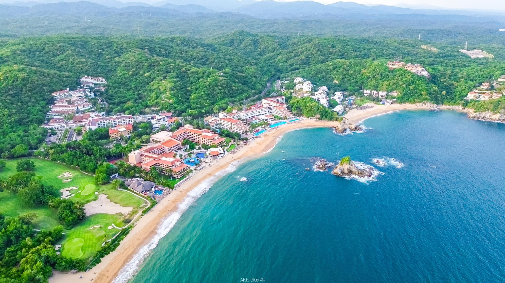
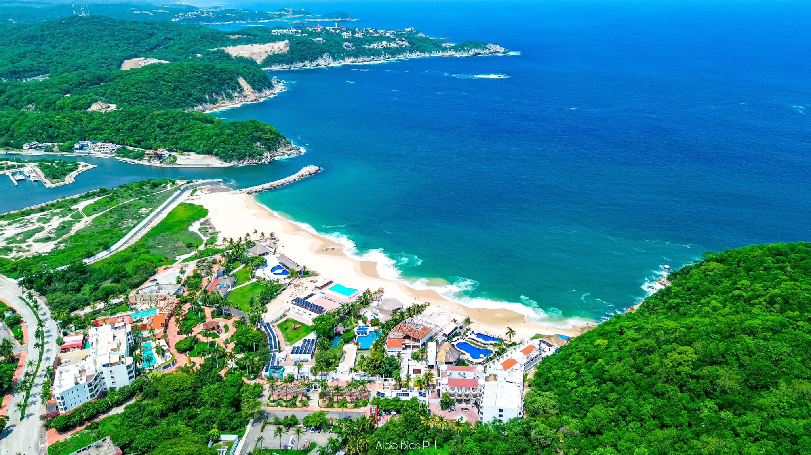

Explora la belleza de este paraíso natural en la costa del Pacífico mexicano.
Una de las bahías más conocidas de Huatulco, Santa Cruz es famosa por su fácil acceso y la belleza de sus aguas tranquilas y cristalinas. Es un destino popular tanto para turistas como locales, con actividades como snorkel, paseos en bote y una gran variedad de restaurantes junto al mar. Su ambiente relajado y la cercanía con el centro de Huatulco hacen de esta bahía una de las más visitadas.
La bahía más grande y una de las más exclusivas de Huatulco, Tangolunda es conocida por sus lujosos resorts y sus amplias playas de arena dorada. Con aguas claras y un clima cálido durante todo el año, es el lugar perfecto para quienes buscan un ambiente relajado con acceso a una gran oferta de actividades acuáticas, como el buceo, el snorkel y paseos en lancha. Es un destino ideal para quienes buscan combinar lujo y naturaleza.
Ubicada cerca del centro de Huatulco, Bahía Chahué es una playa tranquila y de fácil acceso, ideal para quienes buscan relajarse sin alejarse demasiado de la ciudad. Con aguas poco profundas y calmadas, es perfecto para nadar y disfrutar del sol en familia. A lo largo de la bahía se encuentran varias opciones de alojamiento y restaurantes que ofrecen lo mejor de la cocina local, creando un ambiente amigable y cómodo para todos.
Más tranquila y aislada, Bahía Conejos ofrece un refugio para quienes buscan escapar de las grandes multitudes. Esta pequeña bahía es ideal para disfrutar de un día de paz y naturaleza, con aguas cristalinas perfectas para practicar snorkel o simplemente relajarse en su arena dorada. Su acceso es algo limitado, lo que la convierte en un lugar más exclusivo para aquellos que desean una experiencia más íntima con la naturaleza.
Bahía Magué es una de las bahías menos accesibles de Huatulco, lo que la convierte en un lugar especial para los aventureros. Para llegar, es necesario tomar un bote o caminar por un sendero rodeado de vegetación. A pesar de su aislamiento, su belleza natural es impresionante, con aguas tranquilas y un entorno de selva virgen. Es un lugar perfecto para desconectar del bullicio y disfrutar de la tranquilidad del océano y la naturaleza.
Rodeada por acantilados y vegetación tropical, Bahía El Órgano es una pequeña pero impresionante bahía de aguas claras y tranquilas. A pesar de ser menos conocida que otras bahías, su entorno natural intacto la convierte en un excelente lugar para practicar snorkel o simplemente relajarse en su arena. Su belleza y privacidad la hacen ideal para quienes buscan un refugio más íntimo en Huatulco.
Una de las bahías más vírgenes y alejadas de Huatulco, Bahía Cacaluta es famosa por su paisaje natural, que incluye una combinación de selva tropical y aguas cristalinas. Solo es accesible por sendero o en bote, lo que la hace un destino perfecto para los viajeros que buscan disfrutar de la naturaleza en su estado más puro. Su entorno aislado y su belleza sin igual la convierten en un paraíso escondido, ideal para quienes desean explorar el lado más tranquilo y natural de Huatulco.
 


